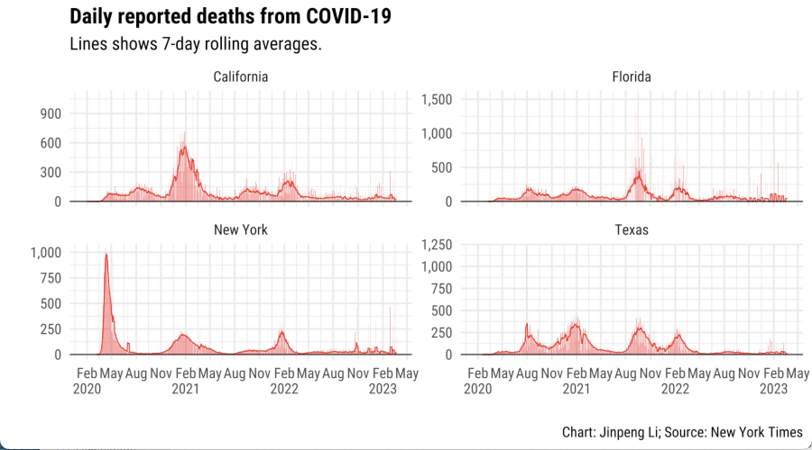
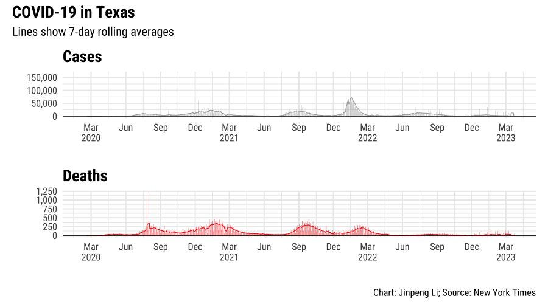
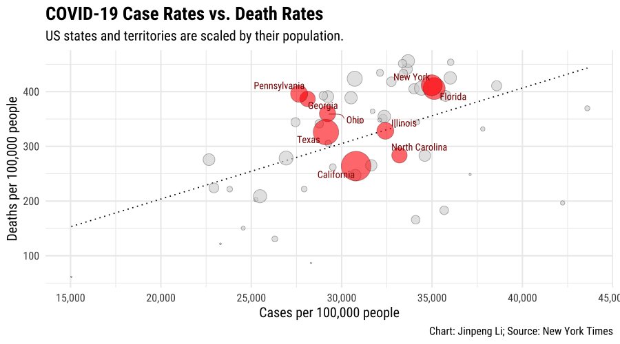

In this series of data visualizations on COVID, I primarily utilized the ggplot2, scales, and patchwork packages in R for presentation. The data focuses on the daily COVID timeline data for cases and deaths in each US state and territory, sourced from The New York Times. Prior to visualization, a cleaning process was conducted.
To create graphic panels containing multiple charts, I employed the patchwork package. Additionally, I calculated the seven-day rolling averages for daily reported COVID cases and deaths for each state and territory. Subsequently, I filtered the timeline data to include only the states with a population of more than 15 million.
In the next set of charts, I aim to study the confirmed cases and death cases in Texas due to COVID and combine them into a single chart.
Certainly! Trend lines are useful for illustrating the relationship between two variables, especially in scatter plots and bubble plots. To begin, I will create a bubble plot to investigate the correlation between case rates and death rates across US states and territories. Subsequently, I will incorporate a line to depict linear regression.
Considering the large number of data points, I will highlight the key states by labeling their names. Moreover, I will use color and labels to emphasize a subset of the points while keeping the rest of the data visible on the chart.
 This visualization was developed under the guidance of Professor Peter Aldhous.